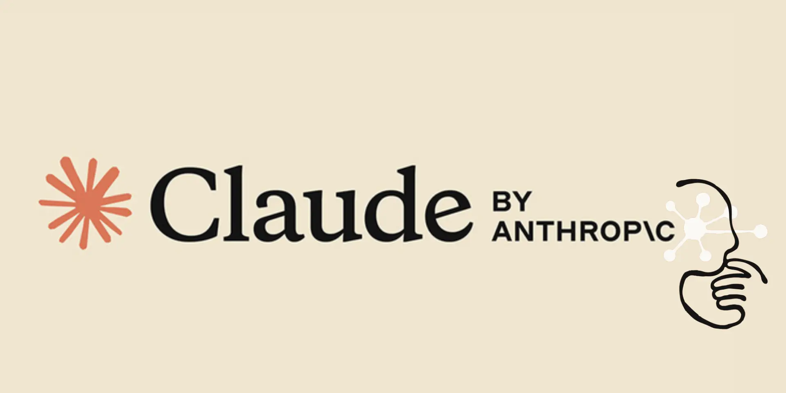

騰訊混元推出 Hy4 flash：每 token 只激活 12B
騰訊混元團隊正式發布 Hy4 系列的平價版本 Hy4 flash，總參數達 224B，其中包含 64B 的 Engram 查找式參數，但每 token 僅需激活 12B，推理成本大幅壓低。該模型支援多模態輸入與 100 萬 Token 的超長上下文，解碼速度超過每秒 150 個 tokens，適合高併發的日常工作負載。API 定價同步公開，每百萬 tokens 輸入僅 0.5 元、輸出 2 元，價格競爭力直指開源平價市場。官方承諾後續將開放模型權重，並登上 OpenRouter 供全球開發者調用。這款模型的推出，顯示中國大廠正把「便宜又夠用」的中型模型當作搶佔推理市場的主力武器。